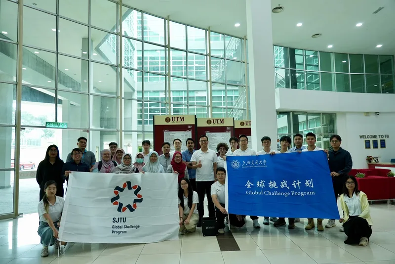
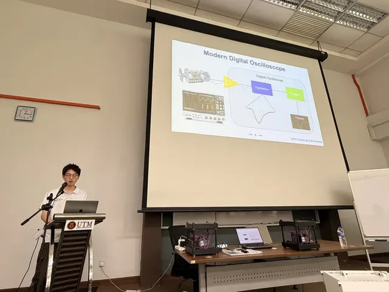
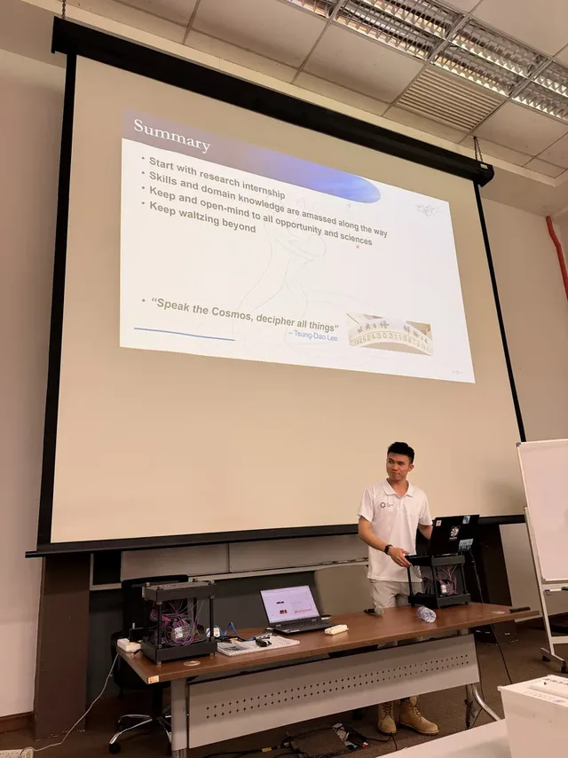

On 10 August, the last stop of the trip took the team to Universiti Teknologi Malaysia (UTM) in Skudai, Johor. Head of department Dr Izyan Hazwani Hashim, representatives of the Atomic Energy Licensing Board, highway operator PLUS and the Public Works Department’s Centre of Excellence for Engineering and Technology (JKR CREaTE), and staff and students from physics and civil engineering took part. PhD student Ng Zheng Wei chaired.


Dr Izyan introduced UTM’s muon physics group and gave undergraduates an introduction to muons. Kim Siang Khaw presented SJTU and TDLI and lectured on muon physics and muon imaging, while Xiyan Yi and Yifei Li demonstrated the detector. Team members then gave a series of talks:
- Guan Ming Wong, a UTM alumnus now a PhD student at TDLI, on his path from UTM to TDLI and his work on COMET and muEDM.
- Mehdi Kaci, a master’s student at TDLI, on cosmic-ray physics and the search for PeVatrons.
- Yinghe Wang on muography, from field measurement and forward modelling to density inversion and 3D reconstruction.
- Yonghao Zeng on data-acquisition systems — triggers, busy logic and FIFO buffers.
- Zhanxu Hao on the analysis chain, from raw ADC data to tracks, angles and density maps.




An open discussion with UTM and the agency and industry guests followed, and the two sides exchanged souvenirs.
This was stop 5 of five on the group’s Global Challenge Program 2026 trip across Peninsular Malaysia (4–11 August). Read the full trip summary, or the original report (in Chinese) on the 缪子科技实验室 WeChat account.
8月10日，项目组来到位于柔佛州士古来（Skudai）的马来西亚理工大学（UTM），与物理系师生开展缪子物理学术交流和经验分享。UTM物理系高级讲师、系主任Izyan Hazwani Hashim博士，马来西亚原子能执照局（Atomic Energy Licensing Board）、南北大道高速公路公司（PLUS）、马来西亚公共工程局（JKR）工程与技术卓越中心（CREaTE）代表，以及物理系与土木工程学院师生参与了活动。会议由UTM物理系博士研究生Ng Zheng Wei主持。
Izyan Hazwani Hashim博士介绍了UTM缪子物理研究团队，并面向本科生进行了缪子物理科普。许金祥介绍了上海交大和李政道研究所，并作缪子物理与缪子成像技术学术讲座；计算机学院本科生易席言、物理与天文学院本科生李逸飞演示了缪子成像探测器的工作原理。随后，项目组成员依次作报告：
- 黄冠铭（Wong Guan Ming），李政道研究所马来西亚籍博士生、UTM校友：回顾从UTM到李政道研究所的科研历程，介绍参与的COMET、muEDM等实验。
- Mehdi Kaci，李政道研究所阿尔及利亚籍硕士生：宇宙线物理学，以及寻找PeV能量宇宙线加速源（PeVatrons）等悬而未决的问题。
- 王赢鹤：缪子成像技术路线，以及从现场探测、正向建模到密度反演和三维重建的完整思路。
- 曾永浩：数据采集系统（DAQ）的设计思路，包括触发、忙逻辑和缓冲FIFO。
- 郝展绪：缪子成像数据分析流程，从ADC原始数据到径迹、入射角和密度分布。
在自由交流环节，项目组成员与UTM师生及各机构、企业代表热烈讨论，双方互赠纪念品。
本文为课题组2026“全球挑战计划”马来西亚之行（8月4日至11日）五站交流中的第5站。查看行程总结，或阅读缪子科技实验室微信公众号原文。
文稿：温诗悦 摄影：叶梓泓、温诗悦